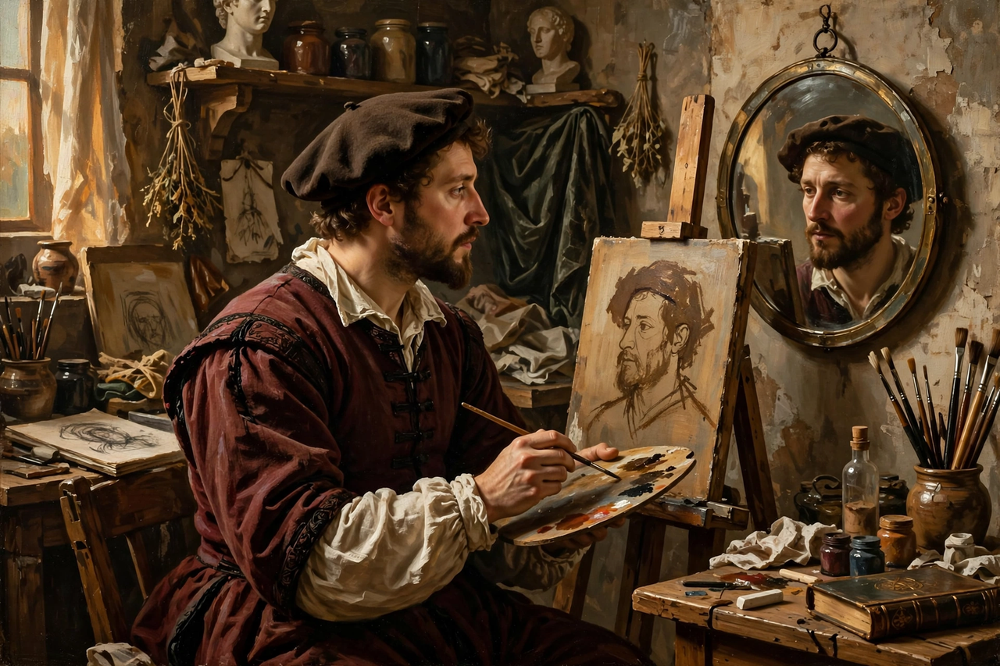

A self-portrait is a portrait of an artist made by the artist themselves. Although self-portraits have been made since the earliest times, it is not until the early Renaissance in the mid-15th century that artists can be frequently identified depicting themselves as either the main subject or as important characters in their work. With better and cheaper mirrors, and the advent of the panel portrait, many painters, sculptors and printmakers tried some form of self-portraiture. Portrait of a Man in a Turban by Jan van Eyck (1433) may be the earliest known panel self-portrait.
| Self-portrait | |
|---|---|
 An artist at work on a self-portrait with the aid of a mirror. | |
| Medium | Painting, drawing, printmaking, photography, sculpture |
| Earliest examples | Antiquity; widespread from the 15th century |
| Noted practitioners | Albrecht Dürer, Rembrandt, Vincent van Gogh, Frida Kahlo |
Isolated examples survive from ancient Egypt and the classical world — the sculptor Bak is shown with his wife in an Egyptian work of about 1350 BCE — and medieval illuminators and masons sometimes inserted small likenesses of themselves into manuscripts and buildings. Such figures were usually signatures or devotional inclusions rather than independent portraits.
The genre flourished with the rising status of the artist in the Renaissance. Leon Battista Alberti encouraged artists to portray themselves, and Albrecht Dürer produced a remarkable sequence of self-images, from a silverpoint drawing aged thirteen (1484) to the frontal, Christ-like Self-Portrait at the Age of Twenty-Eight (1500). Italian painters such as Raphael included themselves among the figures of large compositions, as in The School of Athens.
Rembrandt van Rijn created an unparalleled autobiography in paint, etching, and drawing — some eighty self-portraits across forty years, tracing his rise and decline. Court painters such as Diego Velázquez, who placed himself in Las Meninas (1656), asserted the dignity of their profession through self-portraiture. In the nineteenth century Gustave Courbet and Vincent van Gogh made the self-portrait a vehicle for artistic identity and psychological intensity; van Gogh painted more than thirty self-portraits between 1886 and 1889, partly because he could not afford models.
Twentieth-century artists — Frida Kahlo, Egon Schiele, Pablo Picasso, Andy Warhol, and Cindy Sherman among them — used self-portraiture to explore identity, gender, illness, and persona. Photography transformed the genre from its beginnings, and the ubiquity of camera phones has made the informal photographic self-portrait, the "selfie", a mass cultural form.
Painters traditionally worked from mirrors, which reverse the image left-to-right; some artists corrected for this, others did not. A convex mirror gives a wider field of view, as in Parmigianino's Self-Portrait in a Convex Mirror (c. 1524), painted on a curved panel to mimic the mirror itself.